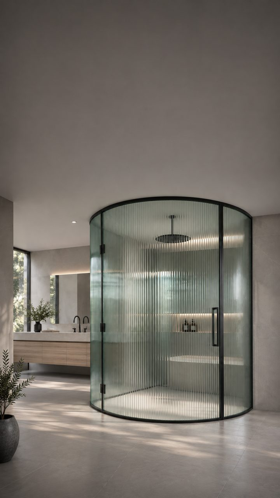
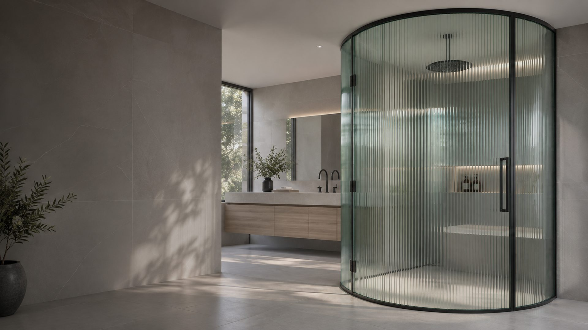
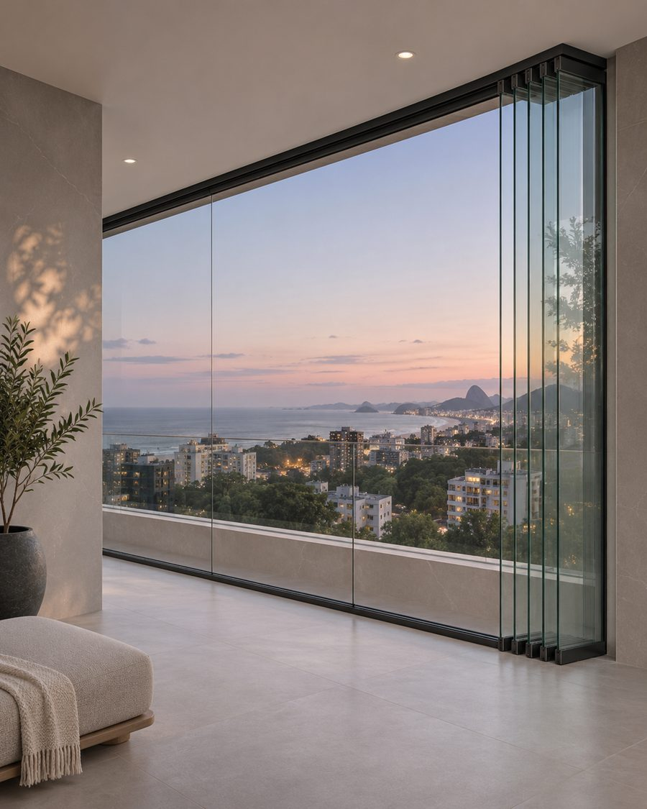
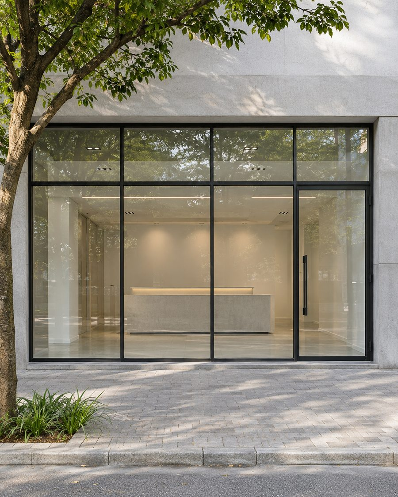
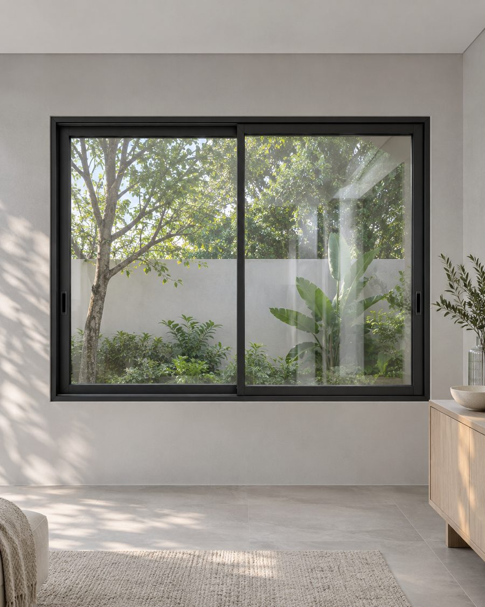
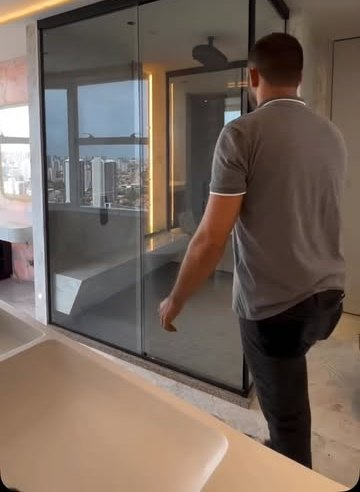
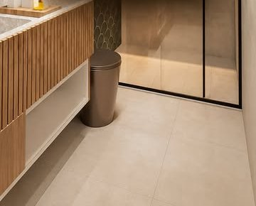
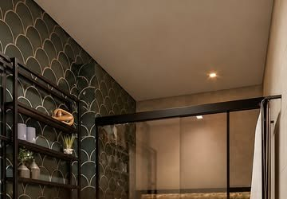
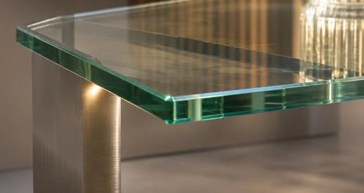

Box de banheiro
De correr, de abrir, até o teto, curvo ou canelado. Sistemas com amortecimento e kits em inox, preto ou dourado.
Orçar box
Tubarão e região · desde 1969
Box, sacadas, fachadas e esquadrias sob medida. A Vidraçaria União especifica o vidro certo para cada vão — antes de instalar.
O que a União faz
Cada vão pede um vidro. Escolha a linha: o vidro canelado sai da frente e mostra o que entra no projeto.

De correr, de abrir, até o teto, curvo ou canelado. Sistemas com amortecimento e kits em inox, preto ou dourado.
Orçar box
Fechamento de sacada e guarda-corpo com o vidro especificado para o uso — a transparência não pode parecer falta de proteção.
Orçar sacada
Grandes superfícies envidraçadas pensadas a partir do entorno: luz, calor, reflexo — e até quem passa voando.
Falar sobre fachada
Janelas, portas e vãos sob medida, com o vidro e o sistema de abertura definidos para cada ambiente.
Orçar esquadriaObras publicadas pela União

“Um box de alto padrão precisa oferecer mais do que beleza. Precisa entregar segurança, conforto e funcionalidade.”
— Vidraçaria União, no Instagram


Corte da lâmina
Aquecido e resfriado rápido: a superfície fica em compressão e o núcleo em tração. Fica muito mais resistente — mas um golpe no ponto errado, como a borda, pode fragmentá-lo inteiro em pedaços pequenos.
Duas lâminas unidas por uma intercamada. Se trincar, os fragmentos ficam presos à película e o vão continua fechado. Escrito como 4+4, 5+5, 4+5…: a espessura de cada lâmina, em milímetros.
A intercamada é um ionoplástico mais rígido que o PVB comum. Por isso aparece em guarda-corpos, coberturas e peças em que o vidro também trabalha como estrutura.

Solicite seu projeto
Monte a mensagem aqui e envie pelo WhatsApp. Você revisa tudo antes de mandar.